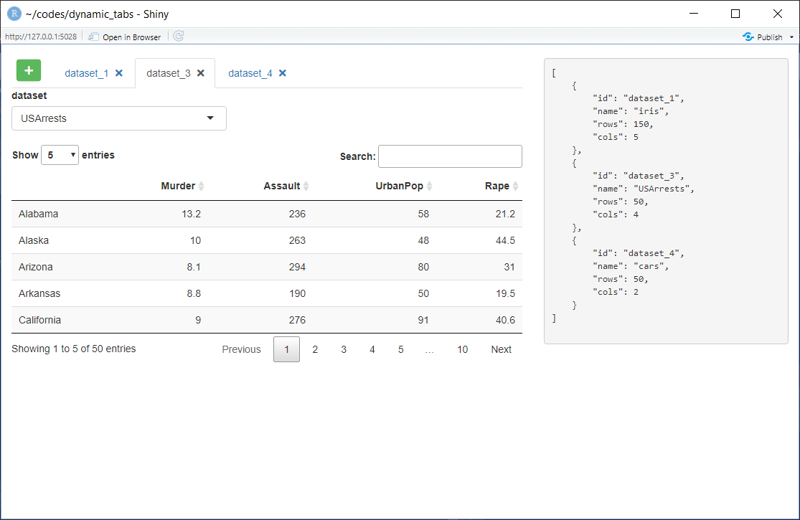
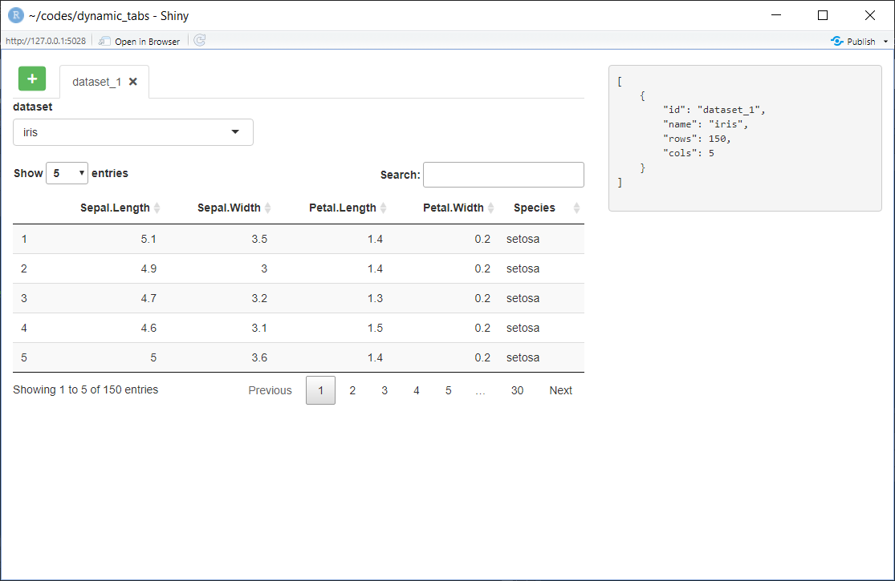

rv$return_data[[dataset_name]] <<- mod_data(id = dataset_name, datasetname = dataset_name)
This is a simple shiny app that demonstrates dynamic shiny tabs. Each tab contains a shiny module which returns a series of data parameters and tabs can be added and removed. In one use-case this construct was used in three higher level tabs, returning a complex, nested structure.
Code is available at: https://github.com/harveyl888/shiny_dynamic_tabs
The concept is fairly simple - upon start up a tabsetPanel is built with a button prepended before the first tab. When clicked, this button adds a new tab containing a shiny module (the tab also contains a close button). The shiny module returns a series of data and these data, from all tabs, are stored in a reaciveValues list (rv$return_data). As tabs are added, deleted or their content changed, the contents of rv$return_data updates.
tabsetPanel code
The code below builds the tabsetPanel. Upon execution, rv$dataset_count is incremented from 0 to 1, dataset_name is set to dataset_1 and added to the rv$dataset_names list, and rv$trigger_add_data_button is changed from FALSE to TRUE. In addition, the first tab is created, containing a shiny module which returns data to rv$return_data. The line:
ensures that the shiny module returns data to a named list using the tab name itself as the component name.
## tabs
output$ui_tabs <- renderUI({
isolate({
rv$dataset_count <- rv$dataset_count + 1
dataset_name <- paste0("dataset_", rv$dataset_count)
rv$dataset_names[[length(rv$dataset_names) + 1]] <- dataset_name
rv$return_data[[dataset_name]] <<- mod_data(id = dataset_name, datasetname = dataset_name)
rv$trigger_add_data_button <- TRUE
})
tabsetPanel(id = "tab_data",
tabPanel(title = tab_title(dataset_name), value = dataset_name, mod_data_UI(dataset_name)))
})Add a new tab with data
The add_dataset function is run whenever the button in the tabsetPanel is clicked. This function adds a new tab containing a shiny module. It is very similar to the tabsetPanel code
## function to add a new dataset
add_dataset <- function() {
rv$dataset_count <- rv$dataset_count + 1
dataset_name <- paste0("dataset_", rv$dataset_count)
rv$dataset_names[[length(rv$dataset_names) + 1]] <- dataset_name
rv$return_data[[dataset_name]] <<- mod_data(id = dataset_name, datasetname = dataset_name)
appendTab(inputId = "tab_data", tabPanel(title = tab_title(dataset_name), value = dataset_name, mod_data_UI(dataset_name)))
}Creating a new tab
Finally, the function below, builds a title for a tab including a close button.
## tab title with close button
tab_title <- function(name, type = "data") {
tags$span(
name,
tags$span(icon("times"),
style = "margin-left: 5px;",
onclick = paste0("Shiny.setInputValue(\"", paste0("remove_", type, "_tab"), "\", \"", name, "\", {priority: \"event\"})"))
)
}When the close icon is clicked the following observeEvent is triggered, removing the tab and updating rv$dataset_names, a list of the names of the current tabs.
## remove a dataset
observeEvent(input$remove_data_tab, {
removeTab(inputId = "tab_data", target = input$remove_data_tab)
isolate({rv$dataset_names <- rv$dataset_names[!rv$dataset_names == input$remove_data_tab]})
})Screen Captures
Upon start up, the tabPanel is built with a button and a single tab. Data returned is printed to the right of the tabPanel.

Adding additional tabs and changing their content updates the returned data.

Removing tab #2 updates the returned data.